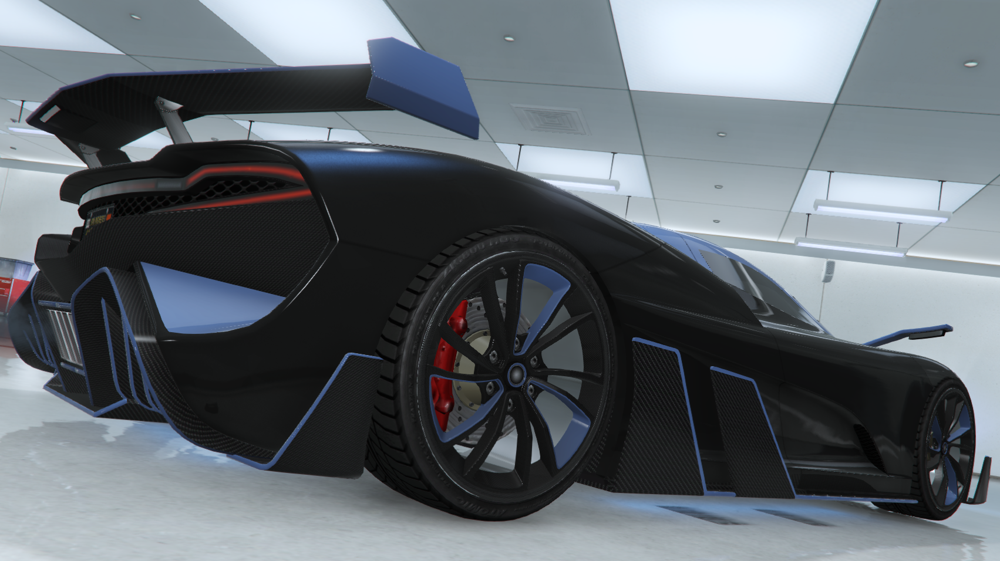
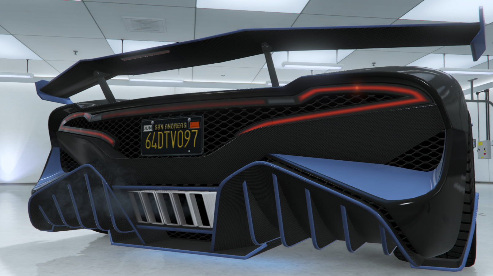

O Overflod Zeno é o ápice da inovação e da performance no universo automotivo. Projetado para quem deseja não apenas dirigir, mas experimentar o máximo da velocidade, estilo e exclusividade, o Zeno é mais do que um carro: é uma declaração de poder e sofisticação. Seja nas ruas ou nas pistas, ele representa o compromisso da Overflod em entregar excelência em cada detalhe.
Com um design que mistura agressividade e elegância, o Overflod Zeno é uma obra de arte sobre rodas. Suas linhas esculpidas com precisão remetem a um fluxo aerodinâmico perfeito, maximizando tanto a eficiência quanto a estética. Faróis angulados, entradas de ar pronunciadas e um perfil baixo transmitem uma sensação de velocidade mesmo quando está parado. Cada elemento foi pensado para impressionar e conquistar olhares.
Equipado com tecnologia de ponta, o Overflod Zeno é uma máquina que une potência e inteligência. Seu motor híbrido de última geração oferece desempenho explosivo e eficiência otimizada, enquanto o sistema de controle eletrônico ajusta tração e estabilidade em tempo real. Além disso, o interior conta com uma interface digital futurista e recursos de conectividade avançada, proporcionando ao motorista uma experiência totalmente imersiva e personalizada.